来源：https://zwia799oeo3.feishu.cn/docx/EPYXd5UPUocTzCxnMLLcchkMnzb
做闲鱼虚拟大概有三个月了。 目前运营3个号每天的净利润在200-500元左右（如果不封号估计更高）。目前能有这个效果主要靠的就是通过数据分析找到爆品，然后将爆品上到自己的号上。
我是这样做数据分析的：
1、每天搜集卖的不错账号的数据， 找到每天出单>50单以上好的账号
具体做法：
闲鱼手机端宝贝页面往下拉会有总卖出的宝贝数
如上图，我们可以通过记录每天手机端卖家卖出数，算出卖家单天卖了多少，从而找到销量不错的卖家。
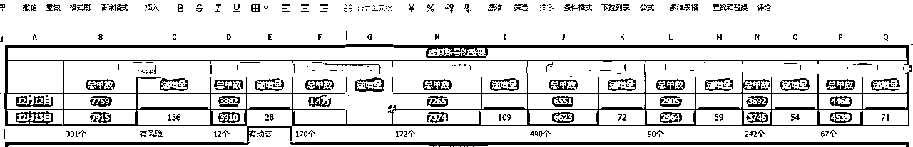
可以用飞书表格记录两天总卖出宝贝数量 而找出卖的不错的账号。
2、将满足要求的账号的品在进行数据分析（也就是找出想要数递增快的），然后上到自己的号上。
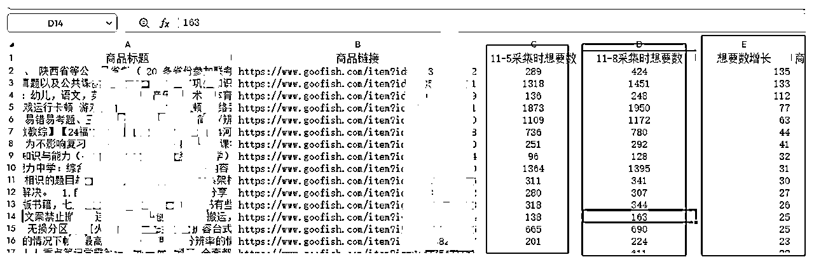
3.说下想要数递增快的如何找。和找店铺一样，都是记录每天宝贝想要数。然后做差值然后倒序排序。
这周二闲鱼网页版更新了，终于能够查看卖家的所有宝贝了。所以现在我们也可以通过闲鱼网页端采集到卖家所有的宝贝数据了。
这篇文章教你用cursor来开发个简单的采集程序。
我们主要采集的就是宝贝的想要数、宝贝价格、宝贝链接这几个参数。想要数是最重要的一个数据。
我们做闲鱼虚拟每天主要的时间都是花在选品上。有了这个程序，我们就能够轻松地获取到大量的品的数据，从而筛选出爆品。能够大幅度的减少我们的时间花费以及能够提升店铺的效果。
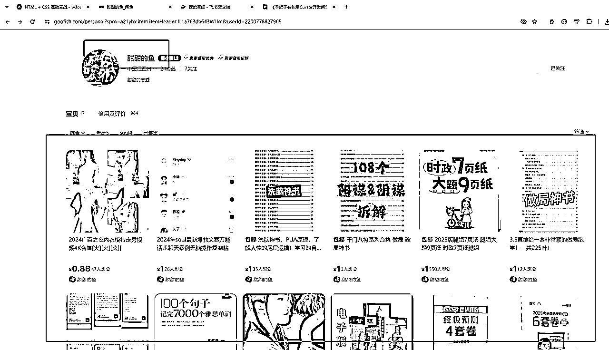
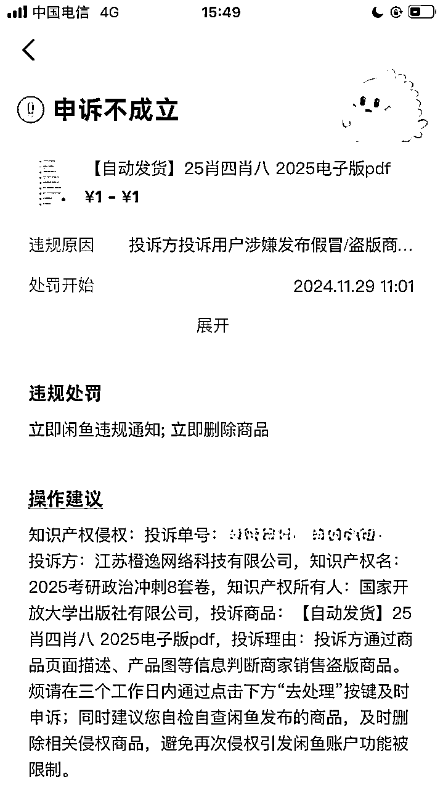
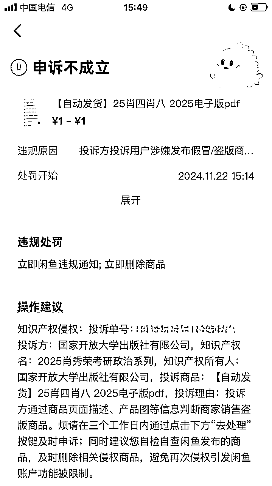
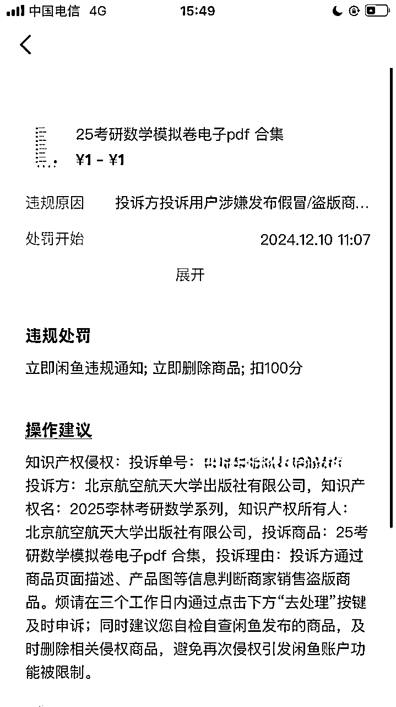
另外说下为什么展示甜甜的鱼这个账号。因为这个账号有明显违规的宝贝，这个号也活不长了。我也因为这个宝贝被封过号。同时也是给大家个提醒。
图二图三算是1个宝贝投诉两次， 然后被（图三）考研数学李林投诉了。这个号就封了。 当然这个号卖了7000单。当然也是很可惜啊，本身这个号一天还有50-100的利润。算下来这一年也损失不少。
说下为什么被封的原因：
这三条违规信息是因为我卖的是人家书的pdf版。本身都是有版权的。 所以有三天这种售假信息被封了。
目前比较容易违规的有：网课类（例如粉笔网课 fb缩写也算）、动画视频类（地理八分钟 wow英语动画）、破解软件类、书的扫描版（也就是pdf）。
最近也在写一篇关于违规分析的文章。到时候写完会在这里连接上。
11年接触网赚，给淘宝客网站改代码，后面做过淘宝客群，用易语言写过qq加好友、一些网站app的私信程序。16年开始做自媒体，到2020年算是赚到人生第一桶金。后疫情期间搞视频号直播。最好的时候7天10万GMV.卖的年货。要不是过年，还能有更好的效果。
最近主要在全职做闲鱼虚拟，目前一天200以上净收益。
其他的可以看下我之前的文章：
看不了就百度网盘下载下视频观看
链接: https://pan.baidu.com/s/1DLlMeiHz4bUySThBG92n6A?pwd=t5du
提取码: t5du 复制这段内容后打开百度网盘手机App，操作更方便哦
https://www.cursor.com/
https://www.w3cschool.cn/codecamp/newList/basehtml
如果真相玩转网页采集 网页开发基础还是需要学会的。 上面是基础教程。如果有时间的把这个教程学一遍。
帮我用python写一个采集闲鱼网页端卖家主页所有宝贝信息的小程序。 就是这个 https://www.goofish.com/personal?spm=a21ybx.item.itemHeader.1.2ed93da6H8Zhn4&userId=2200778827905 通过 nick--sP8UifWP 获取卖家昵称 通过 class num--hPfR3ECA numSelected--lOjNwUrG 确定宝贝一共多少 .cardWarp--dZodM57A 是单个宝贝的。一直往下滑动。每次滑动。检测 有多少个宝贝，如果采集够了总共宝贝数则停止 一次性采集所有.cardWarp--dZodM57A的数据而不是一次只采集5个 需要商品标题 价格 想要数 商品链接 卖家名字 卖家链接 这几项数据。 数据不要有任何符号。只保留数字。 程序执行完后浏览器不要关闭。即使按ctrl+c强制结束程序也不要关闭 我的windows电脑上除了安装了Cursor代码编辑器外，也没有任何相关环境，请详细的一步一步的告诉我应该怎么做，我做完一步告诉你我做完了，你再告诉我下一步应该干什么。
解释：
nick--sP8UifWP 这种是 CSS 的class选择器。我们是通过给cursor。让他知道我们要采集哪里的数据。
这里就解释这些，更详细的看我上面的视频。
接下来看具体的步骤：
首先打开cursor。找个目录创建个文件夹。 用cursor打开目录。
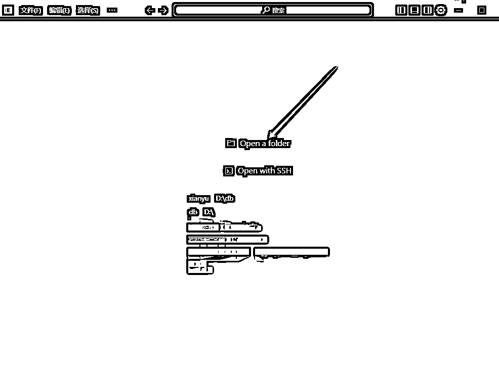
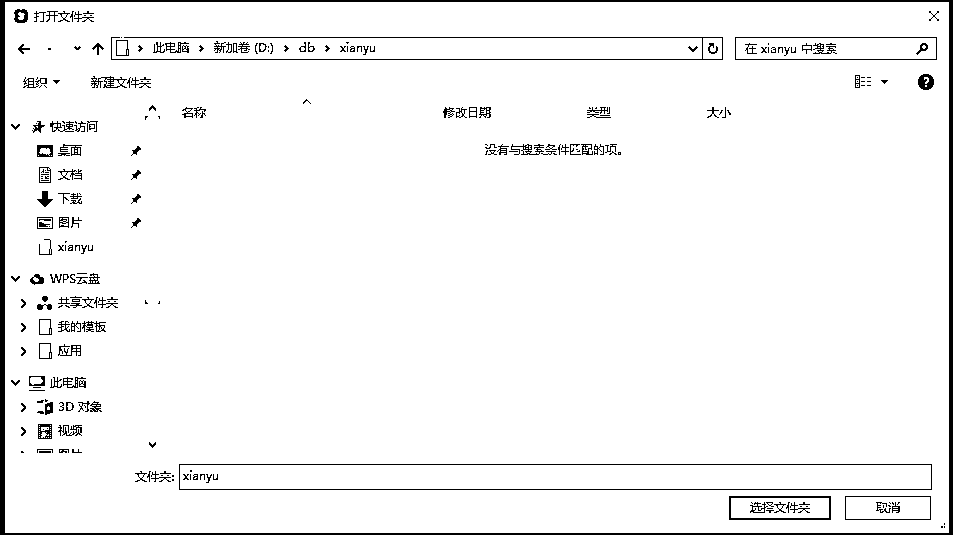
然后选择。
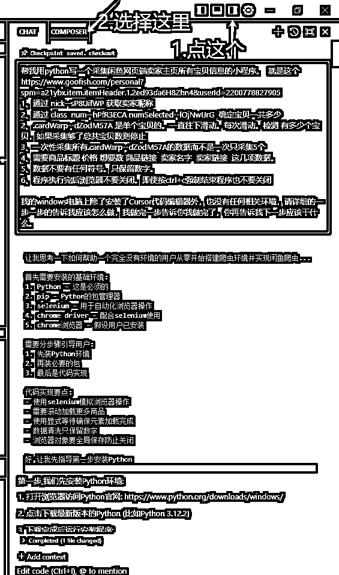
如图，先打开侧边栏，然后选择composer.粘贴我给的提示词。回车。
下载地址就用 cursor给的就行。 我下载的是3.11版本。不要下载3.13的 ，一般最新的很多模块不支持，还得卸掉重装老版本的。
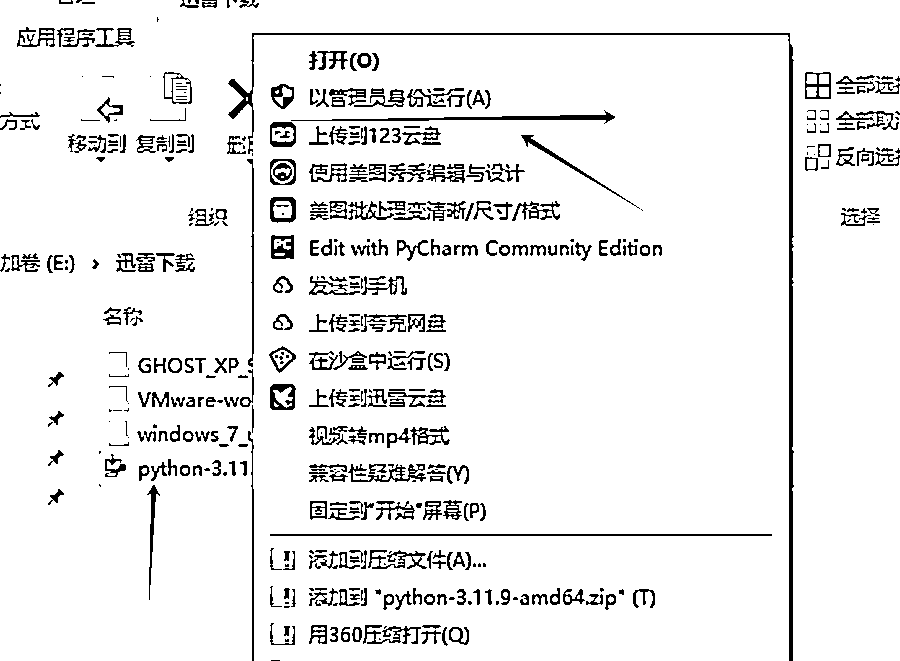
安装时 右键 以管理员身份运行
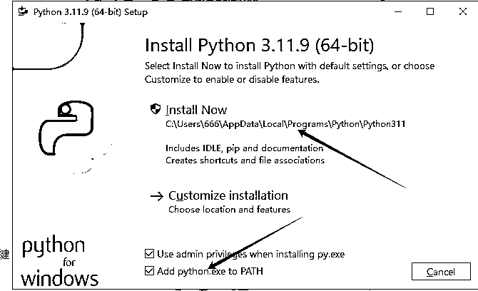
箭头的"Add Python to PATH"选项 一定要选上。
点击"Install Now"
等待安装完成
安装完成后,按Win+R打开运行,输入cmd回车打开命令提示符
在命令提示符中输入:
python --version
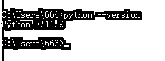
这样就是对了，如果没有。可以卸载后。
选择这个把能选的选项都选上。我有一台电脑就是这样解决的。
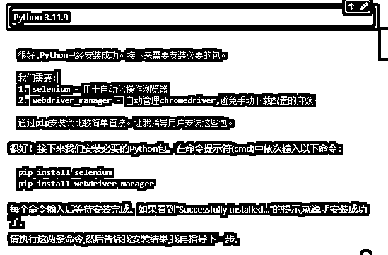
然后将你的版本发给cursor。这样他会根据你的版本选择方案和写代码。也不容易出现版本不一致的情况。
pip install selenium
pip install webdriver-manager
依次安装这两个模块，继续在命令行安装或者 cursor的终端里都行。
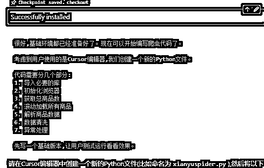
我把Successfully installed 提交给他。 然后他就开始写代码了
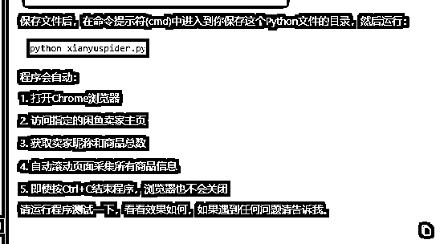
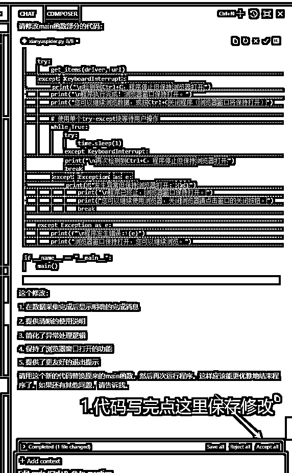
代码写完后点 accept all
然后运行（这个根据cursor给你的文件名，我的是xianyuspider.py，你的不一定是这个，这个要注意）
python xianyuspider.py
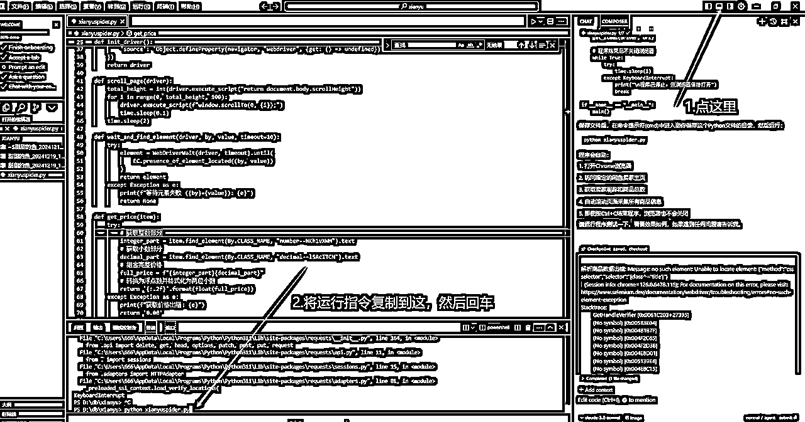
运行步骤
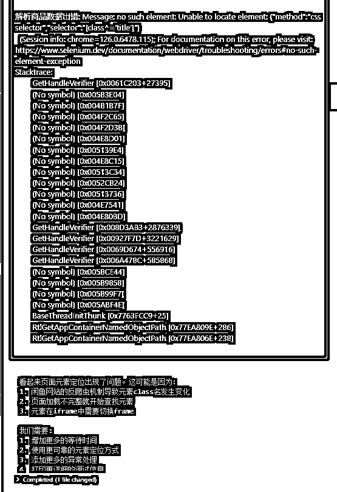
运行后肯定是有错误的。将错误复制然后提交给cursor
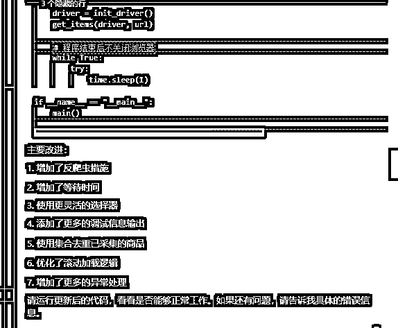
然后他会修改代码。并且给你说改进了哪些。你继续点 accept all。然后重新运行程序。
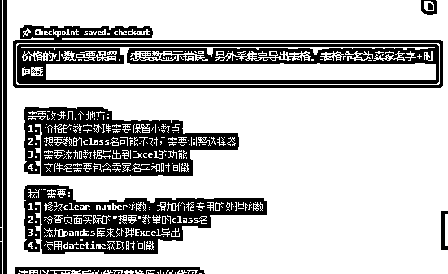
然后就是 对于错误就行提出让他修改
价格的小数点要保留， 想要数显示错误。另外采集完导出表格。表格命名为卖家名字+时间戳
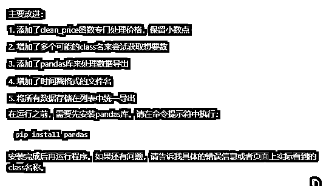
然后再用命令行或者 终端运行安装库的代码
pip install pandas
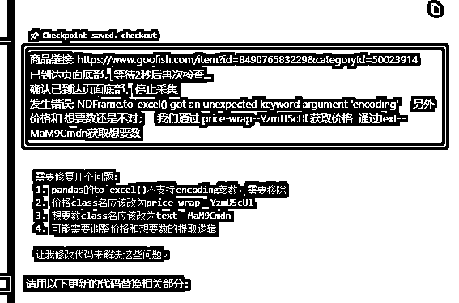
然后继续提交错误。让他修改。错误看你的错误提交。这里就不给提示词了。因为不一定一样。
另外 价格和 想要数还是不对； 我们通过 price-wrap--YzmU5cUl 获取价格 通过text--MaM9Cmdn获取想要数
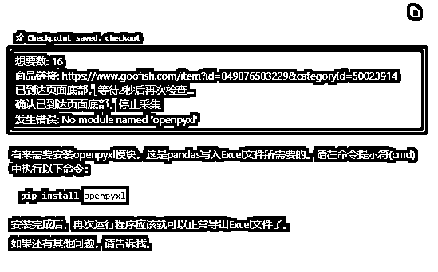
pip install openpyxl
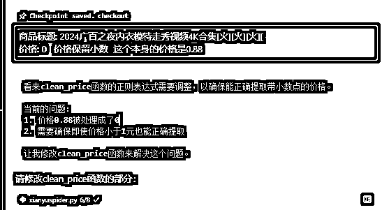
这个提交后还是错的
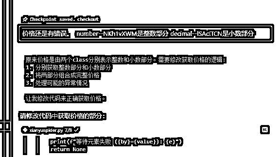
后面发现 他并没有识别出 整数和小数部分的选择。我给了具体 整数部分和小数部分的 具体class 就解决了这个问题。
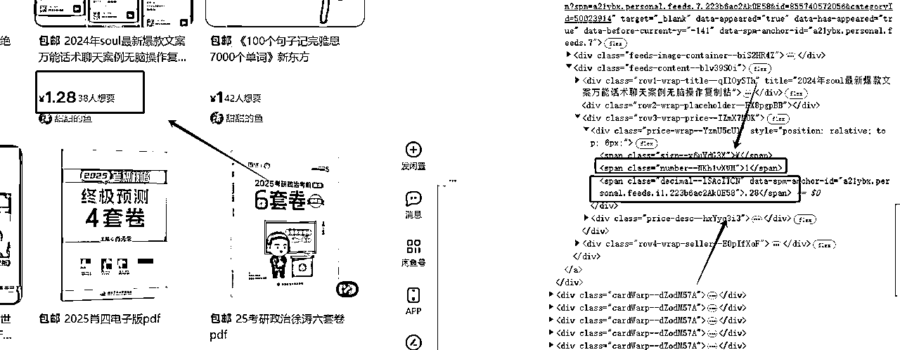
选择一个带小数的，可以清晰看到 两个部分是不同的class选择器。
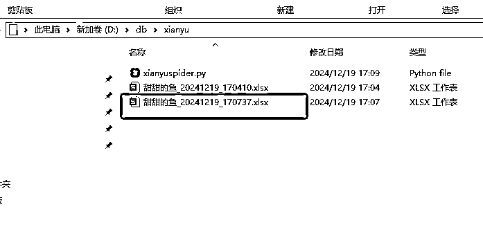
然后在你代码的文件夹就能看到采集的数据了。
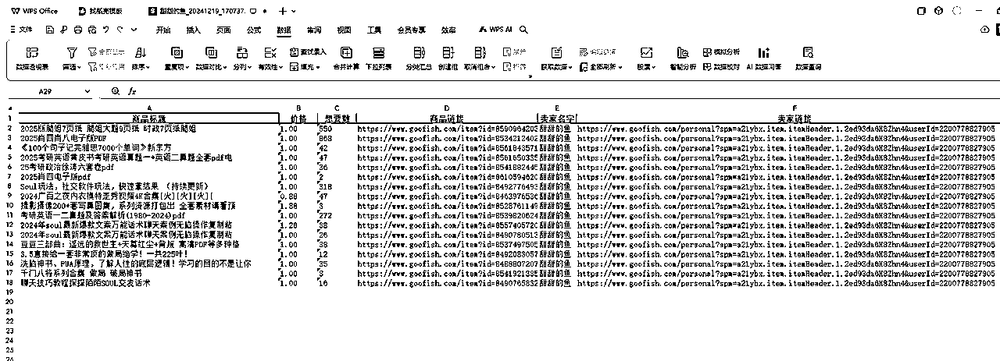
1.cursor 是ai编程，操作这个项目遇到的问题跟我的不一样是正常现象 具体的报什么错误 你把错误给到cursor。另外就是如果需求不满意，可以直接给它修改建议，可以cursor讨论让它给出意见。根据给出的建议修改。
2.软件只是能够让效果出的更快，对于闲鱼虚拟项目初学者建议全部用手工做出效果然后再用软件去扩展。不要上来就依靠软件，这样很容易做不出效果。因为只有手工操作才能够找到对项目的感觉。单纯靠软件你会失去很多项目细节的思考。
3.跟cursor沟通也会遇到各种问题，第一个就是 没有反馈或者一直在转圈，这时候重新来就行了。
第二个就是有时候不会自动修改代码。 比如只给了代码，没有accept all。这种情况，加一句 给我自动更新代码， 就行了。 还不行就点击代码的右上方 手工 apply。
1、用户操作界面
目前是通过命令行运行的。 如果加个用户界面 双击程序打开，然后鼠标操作更好。如下图：
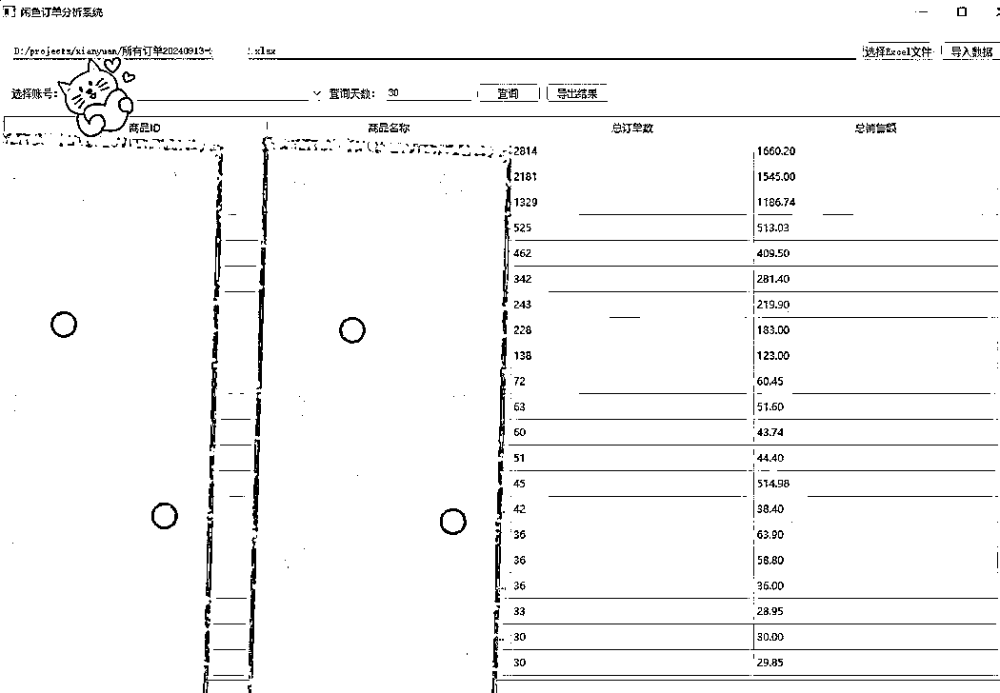
2.批量导入闲鱼卖家主页链接然后批量采集。
就是导入一个存有多个卖家主页链接的txt文件或者excel文件， 然后一次性将所有账号的数据采集完。
3、除了首次采集以外，可以一天后导入已采集的表格 在采集一次想要数。算出想要数差值。找出最畅销的宝贝。
这个原理看文章开头
4、增加数据库存储数据，更方便的存储和调取数据分析数据。
可以将采集的数据保存到sqllite数据库，或者服务器的数据库中。
当然这些就通过和cursor沟通。然后去完善程序就行了。